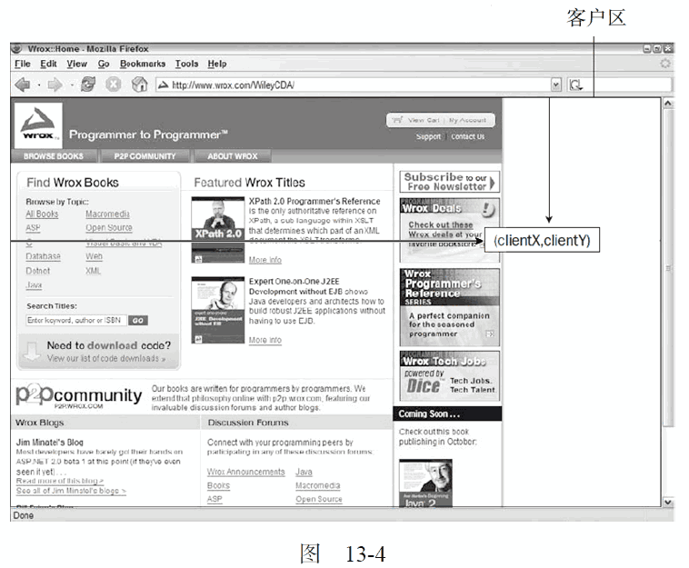
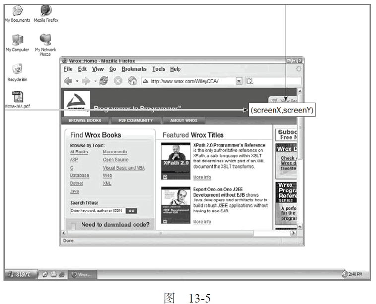
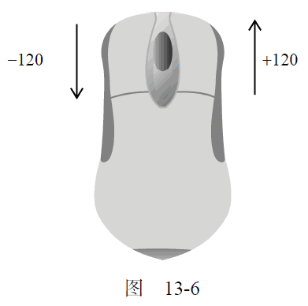
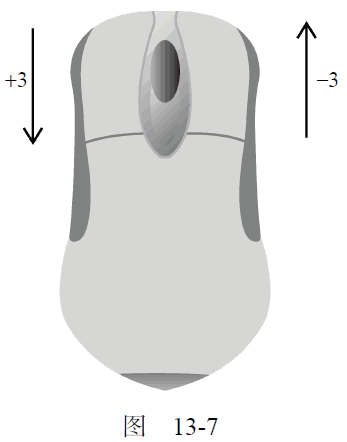

13.4.3 鼠标与滚轮事件
鼠标事件是Web 开发中最常用的一类事件，毕竟鼠标还是最主要的定位设备。DOM3 级事件中定义了9 个鼠标事件，简介如下。
click：在用户单击主鼠标按钮（一般是左边的按钮）或者按下回车键时触发。这一点对确保易访问性很重要，意味着onclick 事件处理程序既可以通过键盘也可以通过鼠标执行。
-
dblclick：在用户双击主鼠标按钮（一般是左边的按钮）时触发。从技术上说，这个事件并不是DOM2 级事件规范中规定的，但鉴于它得到了广泛支持，所以DOM3 级事件将其纳入了标准。
-
mousedown：在用户按下了任意鼠标按钮时触发。不能通过键盘触发这个事件。
-
mouseenter：在鼠标光标从元素外部首次移动到元素范围之内时触发。这个事件不冒泡，而且在光标移动到后代元素上不会触发。DOM2 级事件并没有定义这个事件，但DOM3 级事件将它纳入了规范。IE、Firefox 9+和Opera 支持这个事件。
-
mouseleave：在位于元素上方的鼠标光标移动到元素范围之外时触发。这个事件不冒泡，而且在光标移动到后代元素上不会触发。DOM2 级事件并没有定义这个事件，但DOM3 级事件将它纳入了规范。IE、Firefox 9+和Opera 支持这个事件。
-
mousemove：当鼠标指针在元素内部移动时重复地触发。不能通过键盘触发这个事件。
-
mouseout：在鼠标指针位于一个元素上方，然后用户将其移入另一个元素时触发。又移入的另一个元素可能位于前一个元素的外部，也可能是这个元素的子元素。不能通过键盘触发这个事件。
-
mouseover：在鼠标指针位于一个元素外部，然后用户将其首次移入另一个元素边界之内时触发。不能通过键盘触发这个事件。
-
mouseup：在用户释放鼠标按钮时触发。不能通过键盘触发这个事件。
页面上的所有元素都支持鼠标事件。除了mouseenter 和mouseleave，所有鼠标事件都会冒泡，也可以被取消，而取消鼠标事件将会影响浏览器的默认行为。取消鼠标事件的默认行为还会影响其他事件，因为鼠标事件与其他事件是密不可分的关系。
只有在同一个元素上相继触发mousedown 和mouseup 事件，才会触发click 事件；如果mousedown 或mouseup 中的一个被取消，就不会触发click 事件。类似地，只有触发两次click 事件，才会触发一次dblclick 事件。如果有代码阻止了连续两次触发click 事件（可能是直接取消click事件，也可能通过取消mousedown 或mouseup 间接实现），那么就不会触发dblclick 事件了。这4个事件触发的顺序始终如下：
-
(1) mousedown
-
(2) mouseup
-
(3) click
-
(4) mousedown
-
(5) mouseup
-
(6) click
-
(7) dblclick
显然，click 和dblclick 事件都会依赖于其他先行事件的触发；而mousedown 和mouseup 则不受其他事件的影响。
IE8 及之前版本中的实现有一个小bug，因此在双击事件中，会跳过第二个mousedown 和click事件，其顺序如下：
-
(1) mousedown
-
(2) mouseup
-
(3) click
-
(4) mouseup
-
(5) dblclick
IE9 修复了这个bug，之后顺序就正确了。使用以下代码可以检测浏览器是否支持以上DOM2 级事件（除dbclick、mouseenter 和mouseleave 之外）：
var isSupported = document.implementation.hasFeature("MouseEvents", "2.0");
要检测浏览器是否支持上面的所有事件，可以使用以下代码：
var isSupported = document.implementation.hasFeature("MouseEvent", "3.0")
注意，DOM3 级事件的feature 名是"MouseEvent"，而非"MouseEvents"。
鼠标事件中还有一类滚轮事件。而说是一类事件，其实就是一个mousewheel 事件。这个事件跟踪鼠标滚轮，类似于Mac 的触控板。
1. 客户区坐标位置
鼠标事件都是在浏览器视口中的特定位置上发生的。这个位置信息保存在事件对象的clientX 和clientY 属性中。所有浏览器都支持这两个属性，它们的值表示事件发生时鼠标指针在视口中的水平和垂直坐标。图13-4 展示了视口中客户区坐标位置的含义。

可以使用类似下列代码取得鼠标事件的客户端坐标信息：
var div = document.getElementById("myDiv");
EventUtil.addHandler(div, "click",
function(event) {
event = EventUtil.getEvent(event);
alert("Client coordinates: " + event.clientX + "," + event.clientY);
});
运行一下
这里为一个<div>元素指定了onclick 事件处理程序。当用户单击这个元素时，就会看到事件的客户端坐标信息。注意，这些值中不包括页面滚动的距离，因此这个位置并不表示鼠标在页面上的位置。
2. 页面坐标位置
通过客户区坐标能够知道鼠标是在视口中什么位置发生的，而页面坐标通过事件对象的pageX 和pageY 属性，能告诉你事件是在页面中的什么位置发生的。换句话说，这两个属性表示鼠标光标在页面中的位置，因此坐标是从页面本身而非视口的左边和顶边计算的。
以下代码可以取得鼠标事件在页面中的坐标：
var div = document.getElementById("myDiv");
EventUtil.addHandler(div, "click",
function(event) {
event = EventUtil.getEvent(event);
alert("Page coordinates: " + event.pageX + "," + event.pageY);
});
运行一下
在页面没有滚动的情况下，pageX 和pageY 的值与clientX 和clientY 的值相等。
IE8 及更早版本不支持事件对象上的页面坐标，不过使用客户区坐标和滚动信息可以计算出来。这时候需要用到document.body（混杂模式）或document.documentElement（标准模式）中的scrollLeft 和scrollTop 属性。计算过程如下所示：
var div = document.getElementById("myDiv");
EventUtil.addHandler(div, "click",
function(event) {
event = EventUtil.getEvent(event);
var pageX = event.pageX,
pageY = event.pageY;
if (pageX === undefined) {
pageX = event.clientX + (document.body.scrollLeft || document.documentElement.scrollLeft);
}
if (pageY === undefined) {
pageY = event.clientY + (document.body.scrollTop || document.documentElement.scrollTop);
}
alert("Page coordinates: " + pageX + "," + pageY);
});
运行一下
3. 屏幕坐标位置
鼠标事件发生时，不仅会有相对于浏览器窗口的位置，还有一个相对于整个电脑屏幕的位置。而通过screenX 和screenY 属性就可以确定鼠标事件发生时鼠标指针相对于整个屏幕的坐标信息。图13-5展示了浏览器中屏幕坐标的含义。

可以使用类似下面的代码取得鼠标事件的屏幕坐标：
var div = document.getElementById("myDiv");
EventUtil.addHandler(div, "click",
function(event) {
event = EventUtil.getEvent(event);
alert("Screen coordinates: " + event.screenX + "," + event.screenY);
});
运行一下
与前一个例子类似，这里也是为<div>元素指定了一个onclick 事件处理程序。当这个元素被单击时，就会显示出事件的屏幕坐标信息了。
4. 修改键
虽然鼠标事件主要是使用鼠标来触发的，但在按下鼠标时键盘上的某些键的状态也可以影响到所要采取的操作。这些修改键就是Shift、Ctrl、Alt 和Meta（在Windows 键盘中是Windows 键，在苹果机中是Cmd 键），它们经常被用来修改鼠标事件的行为。DOM 为此规定了4 个属性，表示这些修改键的状态：shiftKey、ctrlKey、altKey 和metaKey。这些属性中包含的都是布尔值，如果相应的键被按下了，则值为true，否则值为false。当某个鼠标事件发生时，通过检测这几个属性就可以确定用户是否同时按下了其中的键。来看下面的例子。
var div = document.getElementById("myDiv");
EventUtil.addHandler(div, "click",
function(event) {
event = EventUtil.getEvent(event);
var keys = new Array();
if (event.shiftKey) {
keys.push("shift");
}
if (event.ctrlKey) {
keys.push("ctrl");
}
if (event.altKey) {
keys.push("alt");
}
if (event.metaKey) {
keys.push("meta");
}
alert("Keys: " + keys.join(","));
});
运行一下
在这个例子中，我们通过一个onclick 事件处理程序检测了不同修改键的状态。数组keys 中包含着被按下的修改键的名称。换句话说，如果有属性值为true，就会将对应修改键的名称添加到keys数组中。在事件处理程序的最后，有一个警告框将检测到的键的信息显示给用户。
IE9、Firefox、Safari、Chrome 和Opera 都支持这4 个键。IE8 及之前版本不支持metaKey 属性。
5. 相关元素
在发生mouseover 和mouserout 事件时，还会涉及更多的元素。这两个事件都会涉及把鼠标指针从一个元素的边界之内移动到另一个元素的边界之内。对mouseover 事件而言，事件的主目标是获得光标的元素，而相关元素就是那个失去光标的元素。类似地，对mouseout 事件而言，事件的主目标是失去光标的元素，而相关元素则是获得光标的元素。来看下面的例子。
<!DOCTYPE html>
<html>
<head>
<title>Related Elements Example</title>
</head>
<body>
<div id="myDiv" style="background-color:red;height:100px;width:100px;"></div>
</body>
</html>
运行一下
这个例子会在页面上显示一个<div>元素。如果鼠标指针一开始位于这个<div>元素上，然后移出了这个元素，那么就会在<div>元素上触发mouseout 事件，相关元素就是<body>元素。与此同时，<body>元素上面会触发mouseover 事件，而相关元素变成了<div>。
DOM通过event 对象的relatedTarget 属性提供了相关元素的信息。这个属性只对于mouseover和mouseout 事件才包含值；对于其他事件，这个属性的值是null。IE8及之前版本不支持relatedTarget属性，但提供了保存着同样信息的不同属性。在mouseover 事件触发时，IE 的fromElement 属性中保存了相关元素；在mouseout 事件触发时，IE 的toElement 属性中保存着相关元素。（IE9 支持所有这些属性。）可以把下面这个跨浏览器取得相关元素的方法添加到EventUtil 对象中。
var EventUtil = {
//省略了其他代码
getRelatedTarget: function(event) {
if (event.relatedTarget) {
return event.relatedTarget;
} else if (event.toElement) {
return event.toElement;
} else if (event.fromElement) {
return event.fromElement;
} else {
return null;
}
},
//省略了其他代码
};
EventUtil.js
与以前添加的跨浏览器方法一样，这个方法也使用了特性检测来确定返回哪个值。可以像下面这样使用EventUtil.getRelatedTarget()方法：
var div = document.getElementById("myDiv");
EventUtil.addHandler(div, "mouseout",
function(event) {
event = EventUtil.getEvent(event);
var target = EventUtil.getTarget(event);
var relatedTarget = EventUtil.getRelatedTarget(event);
alert("Moused out of " + target.tagName + " to " + relatedTarget.tagName);
});
运行一下
这个例子为<div>元素的mouseout 事件注册了一个事件处理程序。当事件触发时，会有一个警告框显示鼠标移出和移入的元素信息。
6. 鼠标按钮
只有在主鼠标按钮被单击（或键盘回车键被按下）时才会触发click 事件，因此检测按钮的信息并不是必要的。但对于mousedown 和mouseup 事件来说，则在其event 对象存在一个button 属性，表示按下或释放的按钮。DOM的button 属性可能有如下3 个值：0 表示主鼠标按钮，1 表示中间的鼠标按钮（鼠标滚轮按钮），2 表示次鼠标按钮。在常规的设置中，主鼠标按钮就是鼠标左键，而次鼠标按钮就是鼠标右键。
IE8 及之前版本也提供了button 属性，但这个属性的值与DOM 的button 属性有很大差异。
-
0：表示没有按下按钮。
-
1：表示按下了主鼠标按钮。
-
2：表示按下了次鼠标按钮。
-
3：表示同时按下了主、次鼠标按钮。
-
4：表示按下了中间的鼠标按钮。
-
5：表示同时按下了主鼠标按钮和中间的鼠标按钮。
-
6：表示同时按下了次鼠标按钮和中间的鼠标按钮。
-
7：表示同时按下了三个鼠标按钮。
不难想见，DOM 模型下的button 属性比IE 模型下的button 属性更简单也更为实用，因为同时按下多个鼠标按钮的情形十分罕见。最常见的做法就是将IE 模型规范化为DOM 方式，毕竟除IE8 及更早版本之外的其他浏览器都原生支持DOM 模型。而对主、中、次按钮的映射并不困难，只要将IE 的其他选项分别转换成如同按下这三个按键中的一个即可（同时将主按钮作为优先选取的对象）。换句话说，IE 中返回的5 和7 会被转换成DOM 模型中的0。
由于单独使用能力检测无法确定差异（两种模型有同名的button 属性），因此必须另辟蹊径。我们知道，支持DOM 版鼠标事件的浏览器可以通过hasFearture()方法来检测，所以可以再为EventUtil 对象添加如下getButton()方法。
var EventUtil = {
//省略了其他代码
getButton: function(event) {
if (document.implementation.hasFeature("MouseEvents", "2.0")) {
return event.button;
} else {
switch (event.button) {
case 0:
case 1:
case 3:
case 5:
case 7:
return 0;
case 2:
case 6:
return 2;
case 4:
return 1;
}
}
},
//省略了其他代码
};
EventUtil.js
通过检测"MouseEvents"这个特性，就可以确定event 对象中存在的button 属性中是否包含正确的值。如果测试失败，说明是IE，就必须对相应的值进行规范化。以下是使用该方法的示例。
var div = document.getElementById("myDiv");
EventUtil.addHandler(div, "mousedown",
function(event) {
event = EventUtil.getEvent(event);
alert(EventUtil.getButton(event));
});
运行一下
在这个例子中，我们为一个<div>元素添加了一个onmousedown 事件处理程序。当在这个元素上按下鼠标按钮时，会有警告框显示按钮的代码。
在使用onmouseup 事件处理程序时，button 的值表示释放的是哪个按钮。此外，如果不是按下或释放了主鼠标按钮，Opera 不会触发mouseup 或mousedown事件。
7. 更多的事件信息
“DOM2 级事件”规范在event 对象中还提供了detail 属性，用于给出有关事件的更多信息。对于鼠标事件来说，detail 中包含了一个数值，表示在给定位置上发生了多少次单击。在同一个元素上相继地发生一次mousedown 和一次mouseup 事件算作一次单击。detail 属性从1 开始计数，每次单击发生后都会递增。如果鼠标在mousedown 和mouseup 之间移动了位置，则detail 会被重置为0。
IE 也通过下列属性为鼠标事件提供了更多信息。
-
altLeft：布尔值，表示是否按下了Alt 键。如果altLeft 的值为true，则altKey 的值也为true。
-
ctrlLeft：布尔值，表示是否按下了Ctrl 键。如果ctrlLeft 的值为true，则ctrlKey 的值也为true。
-
offsetX：光标相对于目标元素边界的x 坐标。
-
offsetY：光标相对于目标元素边界的y 坐标。
-
shiftLeft：布尔值，表示是否按下了Shift 键。如果shiftLeft 的值为true，则shiftKey的值也为true。
这些属性的用处并不大，原因一方面是只有IE 支持它们，另一方是它们提供的信息要么没有什么价值，要么可以通过其他方式计算得来。
8. 鼠标滚轮事件
IE 6.0 首先实现了mousewheel 事件。此后，Opera、Chrome 和Safari 也都实现了这个事件。当用户通过鼠标滚轮与页面交互、在垂直方向上滚动页面时（无论向上还是向下），就会触发mousewheel事件。这个事件可以在任何元素上面触发，最终会冒泡到document（IE8）或window（IE9、Opera、Chrome 及Safari）对象。与mousewheel 事件对应的event 对象除包含鼠标事件的所有标准信息外，还包含一个特殊的wheelDelta 属性。当用户向前滚动鼠标滚轮时，wheelDelta 是120 的倍数；当用户向后滚动鼠标滚轮时，wheelDelta 是120 的倍数。图13-6 展示了这个属性。

将mousewheel 事件处理程序指定给页面中的任何元素或document 对象，即可处理鼠标滚轮的交互操作。来看下面的例子。
EventUtil.addHandler(document, "mousewheel", function(event){
event = EventUtil.getEvent(event);
alert(event.wheelDelta);
});
这个例子会在发生mousewheel 事件时显示wheelDelta 的值。多数情况下，只要知道鼠标滚轮滚动的方向就够了，而这通过检测wheelDelta 的正负号就可以确定。
有一点要注意：在Opera 9.5 之前的版本中，wheelDelta 值的正负号是颠倒的。如果你打算支持早期的Opera 版本，就需要使用浏览器检测技术来确定实际的值，如下面的例子所示。
EventUtil.addHandler(document, "mousewheel",
function(event) {
event = EventUtil.getEvent(event);
var delta = (client.engine.opera && client.engine.opera < 9.5 ? -event.wheelDelta: event.wheelDelta);
alert(delta);
});
运行一下
以上代码使用第9 章创建的client 对象检测了浏览器是不是早期版本的Opera。
由于mousewheel 事件非常流行，而且所有浏览器都支持它，所以HTML 5 也加入了该事件。
Firefox 支持一个名为DOMMouseScroll 的类似事件，也是在鼠标滚轮滚动时触发。与mousewheel事件一样，DOMMouseScroll 也被视为鼠标事件，因而包含与鼠标事件有关的所有属性。而有关鼠标滚轮的信息则保存在detail 属性中，当向前滚动鼠标滚轮时，这个属性的值是-3 的倍数，当向后滚动鼠标滚轮时，这个属性的值是3 的倍数。图13-7 展示了这个属性。

可以将DOMMouseScroll 事件添加到页面中的任何元素，而且该事件会冒泡到window 对象。因此，可以像下面这样针对这个事件来添加事件处理程序。
EventUtil.addHandler(window, "DOMMouseScroll",
function(event) {
event = EventUtil.getEvent(event);
alert(event.detail);
});
运行一下
这个简单的事件处理程序会在鼠标滚轮滚动时显示detail 属性的值。
若要给出跨浏览器环境下的解决方案，第一步就是创建一个能够取得鼠标滚轮增量值（delta）的方法。下面是我们添加到EventUtil 对象中的这个方法。
var EventUtil = {
//省略了其他代码
getWheelDelta: function(event) {
if (event.wheelDelta) {
return (client.engine.opera && client.engine.opera < 9.5 ? -event.wheelDelta: event.wheelDelta);
} else {
return - event.detail * 40;
}
},
//省略了其他代码
};
EventUtil.js
这里，getWheelDelta()方法首先检测了事件对象是否包含wheelDelta 属性，如果是则通过浏览器检测代码确定正确的值。如果wheelDelta 不存在，则假设相应的值保存在detail 属性中。由于Firefox 的值有所不同，因此首先要将这个值的符号反向，然后再乘以40，就可以保证与其他浏览器的值相同了。有了这个方法之后，就可以将相同的事件处理程序指定给mousewheel 和DOMMouse-Scroll 事件了，例如：
(function() {
function handleMouseWheel(event) {
event = EventUtil.getEvent(event);
var delta = EventUtil.getWheelDelta(event);
alert(delta);
}
EventUtil.addHandler(document, "mousewheel", handleMouseWheel);
EventUtil.addHandler(document, "DOMMouseScroll", handleMouseWheel);
})();
运行一下
我们将相关代码放在了一个私有作用域中，从而不会让新定义的函数干扰全局作用域。这里定义的handleMouseWheel()函数可以用作两个事件的处理程序（如果指定的事件不存在，则为该事件指定处理程序的代码就会静默地失败）。由于使用了EventUtil.getWheelDelta()方法，我们定义的这个事件处理程序函数可以适用于任何一种情况。
9. 触摸设备
iOS 和Android 设备的实现非常特别，因为这些设备没有鼠标。在面向iPhone 和iPod 中的Safari开发时，要记住以下几点。
-
不支持dblclick 事件。双击浏览器窗口会放大画面，而且没有办法改变该行为。
-
轻击可单击元素会触发mousemove 事件。如果此操作会导致内容变化，将不再有其他事件发生；
如果屏幕没有因此变化，那么会依次发生mousedown、mouseup 和click 事件。轻击不可单击的元素不会触发任何事件。可单击的元素是指那些单击可产生默认操作的元素（如链接），或者那些已经被指定了onclick 事件处理程序的元素。
-
mousemove 事件也会触发mouseover 和mouseout 事件。
-
两个手指放在屏幕上且页面随手指移动而滚动时会触发mousewheel 和scroll 事件。
10. 无障碍性问题
如果你的Web 应用程序或网站要确保残疾人特别是那些使用屏幕阅读器的人都能访问，那么在使用鼠标事件时就要格外小心。前面提到过，可以通过键盘上的回车键来触发click 事件，但其他鼠标事件却无法通过键盘来触发。为此，我们不建议使用click 之外的其他鼠标事件来展示功能或引发代码执行。因为这样会给盲人或视障用户造成极大不便。以下是在使用鼠标事件时应当注意的几个易访问性问题。
-
使用click 事件执行代码。有人指出通过onmousedown 执行代码会让人觉得速度更快，对视力正常的人来说这是没错的。但是，在屏幕阅读器中，由于无法触发mousedown 事件，结果就会造成代码无法执行。
-
不要使用onmouseover 向用户显示新的选项。原因同上，屏幕阅读器无法触发这个事件。如果确实非要通过这种方式来显示新选项，可以考虑添加显示相同信息的键盘快捷方式。
-
不要使用dblclick 执行重要的操作。键盘无法触发这个事件。
遵照以上提示可以极大地提升残疾人在访问你的Web 应用程序或网站时的易访问性。
要了解如何在网页中实现无障碍访问的内容，请访问www.webaim.org 和http://yaccessibilityblog.com/。